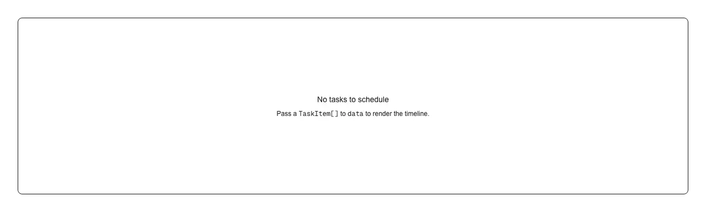

Rendered on the shadcn default neutral palette with harness-generated props.
pnpm dlx shadcn@4.21.0 add @ilinxa/gantt-timeline
| licence | ASSET |
|---|---|
| primitive base | none |
| type | registry:block |
| files | src/components/gantt-timeline/gantt-timeline.tsxsrc/components/gantt-timeline/hooks/use-color-tick.tssrc/components/gantt-timeline/hooks/use-gantt-context.tssrc/components/gantt-timeline/hooks/use-gantt-edit.tssrc/components/gantt-timeline/hooks/use-gantt-viewport.tssrc/components/gantt-timeline/hooks/use-gantt-virtual.tssrc/components/gantt-timeline/index.tssrc/components/gantt-timeline/lib/color.tssrc/components/gantt-timeline/lib/edit-mutations.tssrc/components/gantt-timeline/lib/edit-permissions.tssrc/components/gantt-timeline/lib/flatten.tssrc/components/gantt-timeline/lib/geometry.tssrc/components/gantt-timeline/lib/time-scale.tssrc/components/gantt-timeline/parts/bar-tooltip-full.tsxsrc/components/gantt-timeline/parts/gantt-bars.tsxsrc/components/gantt-timeline/parts/gantt-context-menu.tsxsrc/components/gantt-timeline/parts/gantt-edit-popover.tsxsrc/components/gantt-timeline/parts/gantt-quick-composer.tsxsrc/components/gantt-timeline/parts/gantt-timeline-axis.tsxsrc/components/gantt-timeline/parts/gantt-timeline-body.tsxsrc/components/gantt-timeline/parts/gantt-timeline-gutter.tsxsrc/components/gantt-timeline/parts/gantt-timeline-root.tsxsrc/components/gantt-timeline/parts/gantt-timeline-skeleton.tsxsrc/components/gantt-timeline/parts/gantt-timeline-toolbar.tsxsrc/components/gantt-timeline/types.ts |
| npm deps pulled | @fontsource-variable/caveat @fontsource/kalam @fontsource/patrick-hand @fontsource/shadows-into-light |
| registry deps | avatar badge button context-menu input separator skeleton @ilinxa/task-card |
| semantic / palette / hex | 100 / 0 / 0 |
| writes shared ui/ | no |